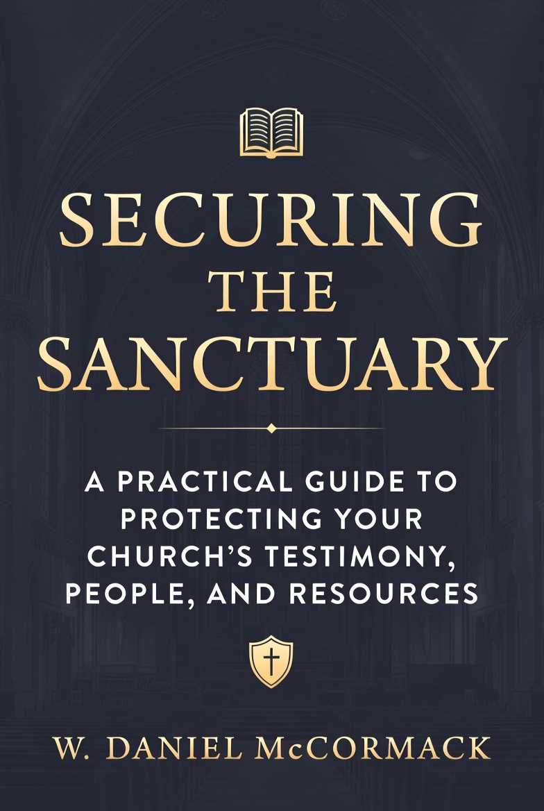

A Practical Guide to Protecting Your Church’s Testimony,
People, and Resources
by W. Daniel McCormack
Biblical wisdom and practical strategies for church leaders who want to protect their congregations without compromising welcome and witness.
Instant delivery • Read on any device • Kindle Unlimited eligible
Churches today face rising threats — from targeted violence and arson to vandalism and disruption — while still providing a welcome and gospel witness. Securing the Sanctuary gives pastors, elders, and safety teams a clear, compassionate, and theologically sound framework for protecting people without compromising the heart of the church.
Biblical principles + battle-tested practical strategies
What Scripture actually teaches about guarding the vulnerable, righteous use of force, and the shepherd’s duty to protect the flock.
How to assess real risks, build effective safety teams, run meaningful drills, and implement layered protection without turning your church into a fortress.
How security decisions either strengthen or undermine your church’s witness — and how to do both faithfully and well.
Lead with clarity and biblical conviction when making decisions about safety and security.
Equip your team with principles and skills that work in real church environments.
Develop policies, procedures, and training to protect your congregation, ministry, facilities, and resources.
Advocate wisely and biblically for better protection of your church family.
Why guarding the church is not optional for faithful shepherds.
Real data, patterns, and unique vulnerabilities.
How to lead change that your congregation will embrace.
A proven decision-making framework adapted for churches.
Policies, people, physical security, cybersecurity, training, and community partnerships.
W. Daniel McCormack spent over 45 years in active duty, reserves, and as a contractor in special weapons, special operations, and high-risk security environments. He mastered physical, operational, and cyber security in some of the world’s most sensitive situations.
Throughout those years, Dan served his local church as an elder, deacon, board member, Sunday School teacher, and small group leader. He saw a painful reality: while earthly assets were guarded by sophisticated defenses, churches often left their people, property, and testimony largely unprotected.
Securing the Sanctuary is not a tactical manual for operators. It is a practical, biblically grounded guide for pastors and church leaders — teaching how to build policy, train volunteers, and create procedures that protect people and testimony while upholding the gospel.
W. Daniel McCormack
Founder, Sanctuary Shield LLC • Lancaster County, Pennsylvania
Get the complete guide trusted by church leaders who take both safety and testimony seriously.
Buy "Securing the Sanctuary" on KindleAvailable AUGUST 2026 on Amazon Kindle • Read on phone, tablet, or Kindle device